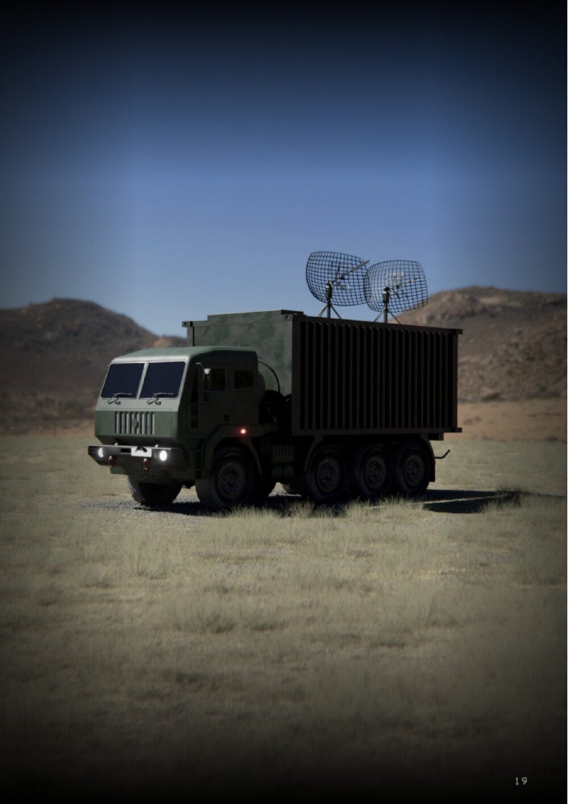

Mobile Distributed Command Centre
A ruggedized mobile command shelter engineered to deploy edge intelligence directly into tactical sectors. Integrating high-density edge compute, secure storage, and resilient tactical networking, the MDCC runs the Apollyon Cortex intelligence engine locally without cloud dependencies.
MDCC baseline

Where it is used
| Situation | Why the MDCC |
|---|---|
| Forward formation ISR control | One operator supervises 6–20 ISR aircraft at the formation's own location, without a reachback dependency |
| Denied or degraded communications | Every stage of processing is local, so the picture survives the loss of satellite or cellular bearers |
| Rapid relocation | A command post that can move is a command post that is harder to target |
| Multi-unit deconfliction | Fuses drone, radar, vehicle and observation-post feeds into a single current picture for the sector |
| Evidence-backed reporting | Produces the analyst package and the higher-HQ report from the same assessment, with provenance attached |
| Counter-UAS coordination | Holds the air picture that cues interceptors such as Ahuti |
What the platform carries
Compute, storage, networking and the Cortex software, with every stage of processing running locally. One operator supervises six to twenty ISR aircraft while the vision layer watches every feed, remembers what each patch of ground looked like on the last pass, and escalates only what has actually changed.
The decisive engineering requirement is no reachback dependency. The MDCC houses onboard neural inference clusters, persistent spatial vector databases, and multi-network routing hardware. No assessment stage relies on remote cloud infrastructure or satellite uplinks. When hostile electronic warfare degrades long-range bearers, dissemination range narrows, but local processing and sector awareness remain uninterrupted.
The MDCC is the tactical-vehicle host of a family. The same Cortex software runs in an operations room, at a fixed command post, on a rugged edge server, or at higher headquarters. A formation therefore trains once and deploys the same behaviour at every echelon.
Deployment hosts and bearers
| Deployment hosts | Tactical vehicle · command post · ops room · edge server · higher HQ |
| Bearer support | MANET · vehicle radio · UAV link · satellite · fibre · cellular |
| Node profiles | Mission · location · status · authorisations · link capacity |
| Result format | Location · evidence · confidence · historical context |
| Scope | Multi-ISR · evidence management · dissemination · external integration |
| Exclusions | No autonomous engagement · no weapon control · no IFF · no higher-HQ C2 |
Related pages
Where this sits in the stack
Cortex is the portfolio's data layer, not a vehicle stack: it ingests sensors, builds a world graph, and compiles role-adapted outputs. The vehicle side of the architecture — hardware, software, the flight loop and navigation under denial — is on the shared core; the Cortex pipeline itself is Fig. 07 there.